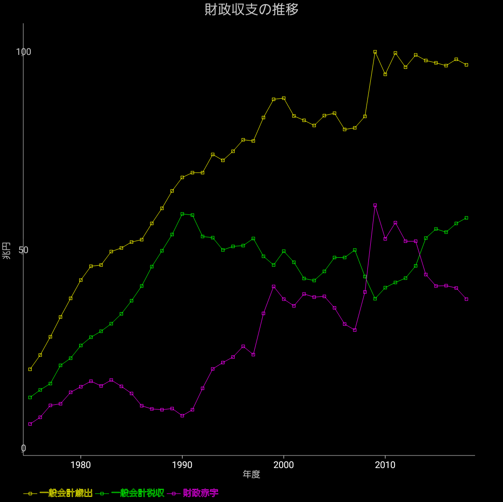

財政収支の推移

日本の財政赤字は良く話題になりますが、まずは税収と歳出の推移を見てみましょう。この差が財政赤字となります。
1990年度あたりまではある程度は歳出と税収の伸びは連動していました。
1990年度から乖離が始まっていて、大きく歳出が税収を上回っています。また税収が増えていないのも見て分かると思います。
歳出は2008年から2009年にかけて大きく伸びています。これはほとんどが以前見た「社会保障費の国庫負担」の増加で説明出来ます。つまり、社会保障費の増加以外には別段追加の「無駄遣い」をしていないのに、支出が増えてしまっているのです。
2009年以降は税収が久しぶりに伸びてきていて、そのトレンドが続いています。
歳出は高い水準ではあっても増加は抑えられている為、差額としての財政赤字は減少傾向にあります。
ただしその水準はまだ決して低くはありません。